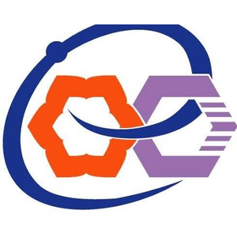
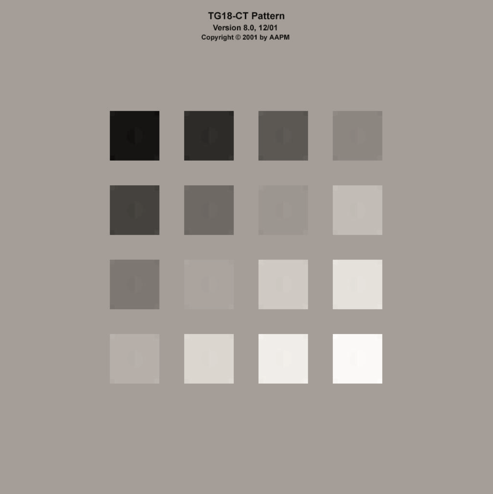
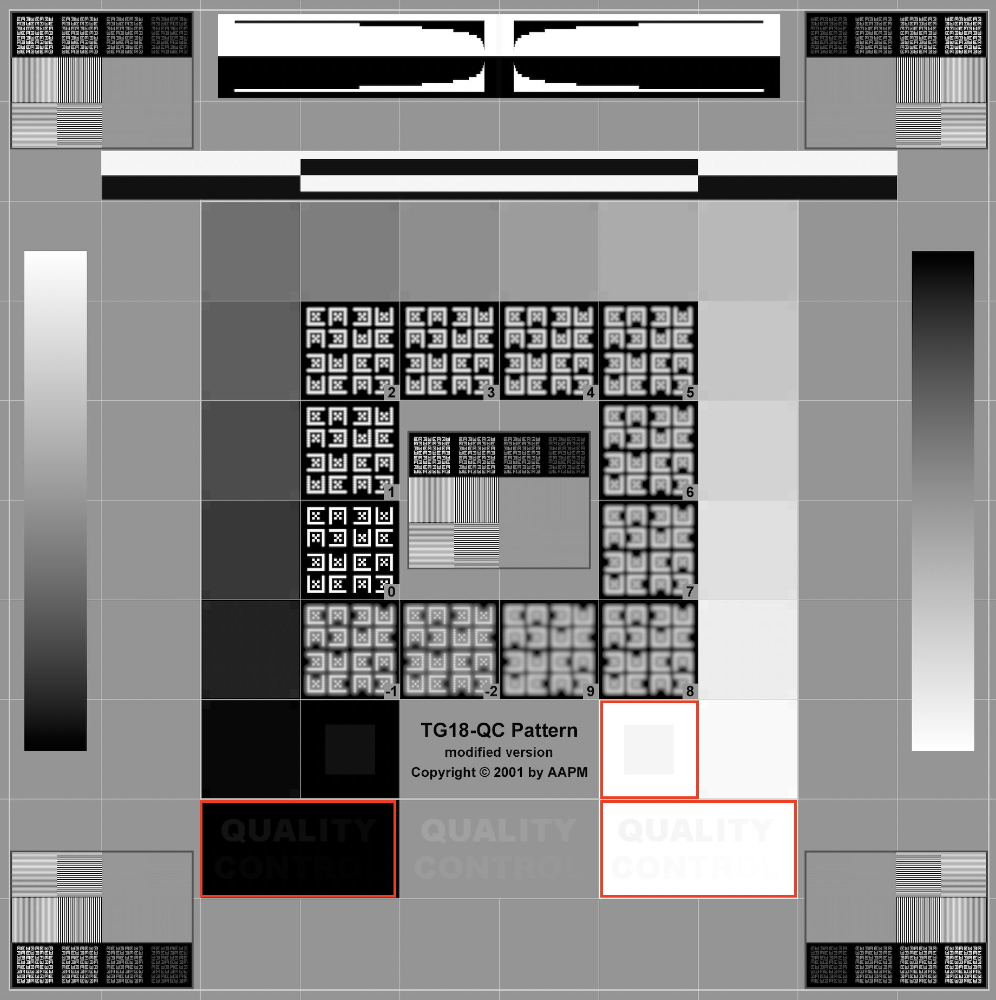

ภาควิชาวิทยาการคอมพิวเตอร์ มหาวิทยาลัยนเรศวร
เว็บไซต์นี้จัดทำขึ้นเพื่อสาธิตระบบต้นแบบประกอบวิทยานิพนธ์รายวิชา 254497 Undergraduate Thesis สาขาวิชาวิทยาการคอมพิวเตอร์ มหาวิทยาลัยนเรศวร
ระบบมีวัตถุประสงค์เพื่อสาธิตการประเมินคุณภาพจอแสดงผลทางการแพทย์ (Medical Display Quality Assessment) ตามมาตรฐาน AAPM TG18 โดยประยุกต์ใช้ภาพถ่ายจากสมาร์ทโฟนร่วมกับเทคนิค Machine Learning และ Deep Learning รายละเอียด
ทั้งนี้ ระบบยังอยู่ในขั้นตอนการวิจัยและพัฒนา ผลการประเมินที่ปรากฏบนเว็บไซต์นี้จัดทำขึ้นเพื่อวัตถุประสงค์ทางการศึกษาและการทดสอบเท่านั้น
เอกสารอ้างอิง
- E. Samei et al., “Assessment of display performance criteria in medical imaging systems,” Medical Physics, vol. 32, no. 4, pp. 1205–1225, 2005.
- กรมวิทยาศาสตร์การแพทย์ กระทรวงสาธารณสุข. (2568). มาตรฐานคุณภาพเครื่องอัลตราซาวด์วินิจฉัยทางการแพทย์ (Quality Standards of Medical Diagnostic Ultrasound Machines). พิมพ์ครั้งที่ 1. กรุงเทพฯ: กรมวิทยาศาสตร์การแพทย์.
รายละเอียดชุดทดสอบ

TG18-CT
ลักษณะของชุดทดสอบ
ชุดทดสอบประกอบด้วยแถบความส่องสว่าง (Luminance Patches) จำนวน 16 ช่อง เรียงลำดับความสว่างจากระดับเข้มที่สุดถึงสว่างที่สุด ใช้สำหรับประเมินว่าจอแสดงผลตอบสนองต่อค่าความส่องสว่างในแต่ละระดับได้อย่างถูกต้องตามมาตรฐานหรือไม่
วิธีการวัด
ทำการวัดค่าความส่องสว่างของแต่ละช่อง แล้วตรวจสอบว่าการเปลี่ยนแปลงระดับความสว่างจากช่องที่มืดที่สุดไปยังช่องที่สว่างที่สุดเป็นไปอย่างต่อเนื่องและเรียงลำดับถูกต้องตามเส้นโค้งมาตรฐาน DICOM Grayscale Standard Display Function (GSDF)
วิธีการพิจารณา
พิจารณาการไล่ระดับความส่องสว่างของทั้ง 16 ช่อง โดยแต่ละช่องจะต้องสามารถแยกความแตกต่างของความสว่างจากช่องข้างเคียงได้ และเรียงลำดับจากระดับเข้มไปสว่างอย่างเป็นลำดับ โดยไม่ปรากฏช่องที่มีความสว่างสลับลำดับ
เกณฑ์การประเมิน
ผ่านเกณฑ์ — การไล่ระดับความส่องสว่างเป็นไปอย่างต่อเนื่องและเรียงลำดับถูกต้อง แสดงว่าจอแสดงผลตอบสนองต่อความส่องสว่างสอดคล้องตามมาตรฐาน
ไม่ผ่านเกณฑ์ — ปรากฏช่องที่มีความส่องสว่างผิดลำดับ หรือไม่สามารถแยกระดับความสว่างระหว่างช่องได้ แสดงว่าการตอบสนองความส่องสว่างของจอแสดงผลไม่เป็นไปตามมาตรฐาน

TG18-QC
ลักษณะของชุดทดสอบ
ชุดทดสอบสำหรับการควบคุมคุณภาพโดยรวม ซึ่งในระบบนี้ใช้ประเมินความสามารถของจอแสดงผลใน 3 ด้าน ตามบริเวณที่กำหนด (กรอบสีแดง) โดยมุ่งเน้นการมองเห็นรายละเอียดและตัวอักษรในสภาวะคอนทราสต์ต่ำ ทั้งในโทนมืดและโทนสว่าง
วิธีการวัด
ตรวจสอบความสามารถในการมองเห็นบริเวณที่กำหนด จำนวน 3 ตำแหน่ง ได้แก่
- การแยกรายละเอียดในโทนสว่าง — พิจารณาว่าสี่เหลี่ยมความสว่างต่ำบนพื้นสว่างสามารถแยกออกจากพื้นหลังได้หรือไม่
- การมองเห็นตัวอักษรคอนทราสต์ต่ำในโทนมืด — พิจารณาว่าข้อความ "QUALITY CONTROL" บนพื้นสีเข้มสามารถอ่านได้หรือไม่
- การมองเห็นตัวอักษรคอนทราสต์ต่ำในโทนสว่าง — พิจารณาว่าข้อความ "QUALITY CONTROL" บนพื้นสีสว่างสามารถอ่านได้หรือไม่
วิธีการพิจารณา
พิจารณาแต่ละบริเวณตามกรอบที่กำหนด จอแสดงผลที่มีคุณภาพจะสามารถแสดงรายละเอียดที่มีความสว่างต่ำและตัวอักษรคอนทราสต์ต่ำให้มองเห็นได้อย่างชัดเจน ทั้งในบริเวณโทนมืดและโทนสว่าง
เกณฑ์การประเมิน
ผ่านเกณฑ์ — สามารถมองเห็นรายละเอียดในโทนสว่าง และอ่านตัวอักษรคอนทราสต์ต่ำได้ทั้งในโทนมืดและโทนสว่าง
ไม่ผ่านเกณฑ์ — รายละเอียดในโทนสว่างไม่ปรากฏ หรือไม่สามารถอ่านตัวอักษรในบริเวณโทนมืดหรือโทนสว่างได้ แสดงว่าจอแสดงผลมีการตัดทอนรายละเอียด (Clipping) ในช่วงความสว่างสูงสุดหรือต่ำสุด
ทีมผู้พัฒนา
ที่ปรึกษา
- ผู้ช่วยศาสตราจารย์ ดร.สุธาสินี ฉิมเล็ก (คณะวิทยาศาสตร์)
- ผู้ช่วยศาสตราจารย์ ดร.ธัญรัตน์ ชูศิลป์ (คณะสหเวชศาสตร์)
ผู้พัฒนาระบบ
- นายณัฐวุฒิ โรจน์บุณถึง (คณะวิทยาศาสตร์)
- นายอธิวัฒน์ ยศปัญญา (คณะวิทยาศาสตร์)
- นางสาววรฤทัย มหาวงษ์ (คณะวิทยาศาสตร์)
คำถามที่พบบ่อย (FAQ)
ถ่ายภาพด้วย iPhone แล้วอัปโหลดไม่ได้
ไฟล์จาก iPhone อาจเป็นนามสกุล HEIC กรุณาแปลงเป็น JPG หรือ PNG ก่อนอัปโหลด
เหตุใดบางหัวข้อจึงแสดงผลเป็น N/A
หมายถึงหัวข้อนั้นยังไม่มีแบบจำลองรองรับในระบบ ซึ่งอยู่ระหว่างการพัฒนาเพิ่มเติม
เหตุใดจึงต้องเลือกชุดทดสอบให้ตรงกับที่แสดงบนจอ
เนื่องจากแต่ละชุดทดสอบใช้วิธีประมวลผลภาพและแบบจำลองที่แตกต่างกัน หากเลือกไม่ตรง ผลการประเมินจะไม่ถูกต้อง
ข้อกำหนดเบื้องต้น
ก่อนเริ่มใช้งาน ควรเตรียมสิ่งต่อไปนี้ให้พร้อม
- สมาร์ทโฟนที่มีกล้องถ่ายภาพ หรือไฟล์ภาพจอแสดงผลที่บันทึกไว้แล้ว รองรับไฟล์ JPG และ PNG
- จอแสดงผลทางการแพทย์ ที่แสดงภาพทดสอบมาตรฐาน TG18 เช่น TG18-CT หรือ TG18-QC
- บัญชีผู้ใช้และรหัสผ่าน สำหรับเข้าสู่ระบบ โดยต้องลงทะเบียนผู้ใช้งานและจอแสดงผลก่อน หากยังไม่มีบัญชี
- การเชื่อมต่ออินเทอร์เน็ต สำหรับการใช้งานระบบ
- ปรับ แสงสว่างภายในห้องให้สอดคล้องกับสภาพการใช้งานจริง และคงสภาพแสงให้เหมาะสมตลอดการทดสอบ
ขั้นตอนการใช้งาน
-
1
ลงทะเบียนและเข้าสู่ระบบ
ลงทะเบียนผู้ใช้งานและจอแสดงผล จากนั้นเข้าสู่ระบบให้เรียบร้อยก่อนเริ่มใช้งาน
-
2
เลือกจอภาพและชุดทดสอบ
เลือกจอแสดงผลที่ต้องการประเมิน และเลือกชุดทดสอบให้ตรงกับชุดทดสอบที่กำลังแสดงอยู่บนจอจริง จากนั้นถ่ายภาพหรือเลือกไฟล์ภาพให้ตรงกับชุดทดสอบที่เลือก
คำแนะนำในการถ่ายภาพ
- ถ่ายให้เห็นชุดทดสอบเต็มจอ ไม่มีส่วนที่ถูกตัดออก
- ถือกล้องในแนวตั้งและให้ตั้งฉากกับจอแสดงผลมากที่สุด เพื่อลดความบิดเบี้ยวของภาพ และควรถ่ายภาพให้เห็นมุมทั้งสี่ของภาพทดสอบอย่างครบถ้วน
- หลีกเลี่ยงแสงสะท้อนบนหน้าจอ และถ่ายในสภาพแสงที่สม่ำเสมอ
กรณีระบบแจ้งให้ถ่ายภาพใหม่
ระบบจะตรวจสอบคุณภาพของภาพก่อนวิเคราะห์โดยอัตโนมัติ หากภาพเบลอเกินไป ไม่พบขอบจอในภาพ หรือไม่สามารถปรับมุมภาพได้ ระบบจะแจ้งเหตุผลและให้ถ่ายภาพใหม่ กรุณาปฏิบัติตามคำแนะนำที่ปรากฏแล้วถ่ายใหม่อีกครั้ง
-
3
วิเคราะห์และบันทึกผล
กดปุ่ม "วิเคราะห์" แล้วรอสักครู่ ระบบจะแสดงผลความน่าจะเป็นของคุณภาพจอแสดงผล จากนั้นสามารถเลือกได้ว่าจะ
- บันทึกผล — เพื่อจัดเก็บผลการทดสอบไว้ในระบบ หลังบันทึกสามารถดาวน์โหลดผลได้ทันที
- ทดสอบอีกครั้ง — เพื่อเริ่มการทดสอบใหม่
-
4
ดูประวัติและเปรียบเทียบผล
- ดูรายการผลการทดสอบย้อนหลังได้ที่เมนู "ประวัติการทดสอบ" และสามารถดาวน์โหลดผลจากรายการในประวัติได้
- เปรียบเทียบผลการทดสอบระหว่างครั้งต่าง ๆ ได้ที่เมนู "เปรียบเทียบผล"
-
5
ออกจากระบบ
เมื่อใช้งานเสร็จสิ้น ควรกดออกจากระบบทุกครั้งเพื่อความปลอดภัยของข้อมูล
- เปิดหน้าจอล่วงหน้าอย่างน้อย 30 นาที และแสดงภาพทดสอบ TG18-CT หรือ TG18-QC ตามรายการประเมิน
- กำหนดระยะห่างระหว่างกล้องกับหน้าจอประมาณ หนึ่งช่วงแขน (65 ซม.) เพื่อให้สามารถถ่ายภาพครอบคลุมพื้นที่ทดสอบและเห็นมุมทั้งสี่ของภาพทดสอบอย่างครบถ้วน
- ตรวจสอบและทำความสะอาดหน้าจอให้ปราศจาก รอยนิ้วมือและฝุ่นละออง ด้วยผ้าไร้ฝุ่น (lint-free cloth) หรือตามคำแนะนำของบริษัทผู้ผลิต
- ทำความสะอาดเลนส์กล้องก่อนถ่ายภาพ โดยใช้ผ้าเช็ดเลนส์หรือผ้าไมโครไฟเบอร์ที่สะอาด เพื่อป้องกันฝุ่นและคราบที่อาจส่งผลต่อคุณภาพของภาพ
- ปรับ แสงสว่างภายในห้องให้สอดคล้องกับสภาพการใช้งานจริง และคงสภาพแสงให้เหมาะสมตลอดการทดสอบ
ความหมายของสถานะผลลัพธ์
| สถานะ | ความหมาย |
|---|---|
| ผ่าน (Pass) | จอแสดงผลอยู่ในเกณฑ์มาตรฐานสำหรับหัวข้อนั้น |
| ไม่ผ่าน (Fail) | จอแสดงผลไม่อยู่ในเกณฑ์มาตรฐาน ควรตรวจสอบหรือปรับตั้งค่าจอเพิ่มเติม |
| N/A | ระบบไม่สามารถประเมินหัวข้อนี้ได้ในขณะนี้ |
ระบบจะแสดงค่าความเชื่อมั่น (Confidence) ประกอบผลแต่ละหัวข้อ เพื่อบ่งชี้ระดับความมั่นใจของแบบจำลองในการประเมิน
ข้อจำกัดของระบบ
- ระบบยังอยู่ระหว่างการวิจัยและพัฒนา ผลการประเมินมีวัตถุประสงค์เพื่อการศึกษาและการคัดกรองเบื้องต้นเท่านั้น ไม่ควรนำไปใช้ตัดสินคุณภาพจอภาพในการวินิจฉัยทางคลินิกจริง
- ความแม่นยำของผลลัพธ์ขึ้นอยู่กับคุณภาพของภาพถ่ายและรุ่นของสมาร์ทโฟนที่ใช้ ภาพที่มีแสงสะท้อนหรือถ่ายในมุมเอียงมากอาจทำให้ผลคลาดเคลื่อน
- บางหัวข้อย่อยอาจยังไม่รองรับการประเมินด้วยแบบจำลอง เนื่องจากข้อจำกัดของข้อมูลฝึกสอน
เข้าสู่ระบบก่อนลงทะเบียนจอภาพ
ลงทะเบียนจอภาพ
จอภาพที่ลงทะเบียนแล้ว
ยังไม่มีจอภาพที่ลงทะเบียน
สมัครสมาชิก
ยืนยันอีเมล
ระบบได้ส่งรหัสยืนยัน 6 หลักไปที่
หมายเหตุ: ยังไม่ได้ตั้งค่าระบบส่งอีเมลจริงในเครื่องนี้ (โหมดทดสอบ) รหัสยืนยันคือ
เข้าสู่ระบบก่อนดูโปรไฟล์
โปรไฟล์
ข้อมูลส่วนตัว
อีเมล
อีเมลปัจจุบัน:
ส่งรหัสยืนยัน 6 หลักไปที่
หมายเหตุ: ยังไม่ได้ตั้งค่าระบบส่งอีเมลจริงในเครื่องนี้ (โหมดทดสอบ) รหัสยืนยันคือ
เปลี่ยนรหัสผ่าน
เข้าสู่ระบบก่อนเริ่มทดสอบ
เลือกจอภาพ
ยังไม่มีจอภาพในระบบ กรุณาลงทะเบียนจอภาพก่อน
เลือกชุดทดสอบ
ตัวอย่างรูปของชุดทดสอบ
กรุณาถ่ายภาพจอแสดงผลให้ตรงกับชุดทดสอบ
ถ่ายภาพ/เลือกภาพถ่าย
ถ่ายภาพจอแสดงผลโดยตรง หรือเลือกไฟล์ที่มีอยู่
สรุปผลการทดสอบ
เข้าสู่ระบบก่อนดูประวัติ
ประวัติผลการทดสอบ
ยังไม่มีประวัติการตรวจ